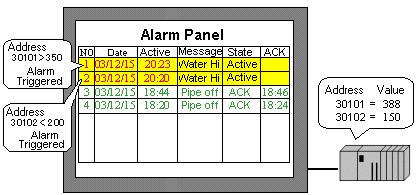
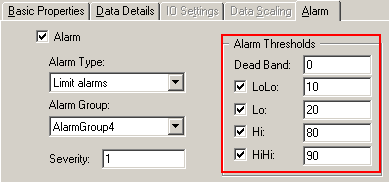
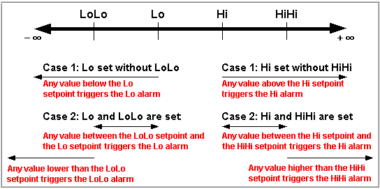
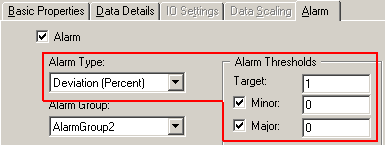
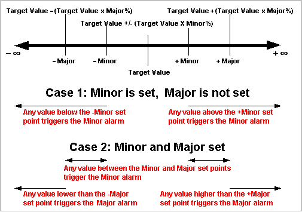
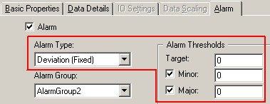
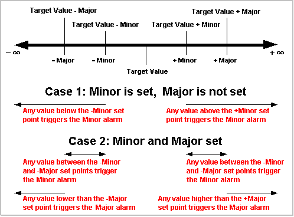

|
|
|
|
|
|
|
|
Vijeo Designer can monitor word addresses (integer or REAL variables) as well as bit addresses (BOOL variables). For more information on bit addresses, see Section 16.2.5, Setting Up BOOL Variables. When monitoring word addresses, an alarm triggers when word address values go out of the specified range.
This section explains how to set up word (integer or REAL variable) alarms.

When monitoring word addresses (integer or REAL variables), an alarm is triggered when the variable value goes out of the specified range. To set up a word alarm in the Variable Properties dialog box, you need to specify the values that trigger the LOLO, LO, HI, and HIHI alarms.
Create a new integer or REAL variable, or double-click the row number of an existing variable to display the Variable Properties dialog box.
In the Alarm tab, select the Alarm checkbox and specify the Alarm Type: Limit alarms, Deviation (Percent), or Deviation (Fixed).
Select Limit Alarm when you want to define specific values that trigger an alarm. In the Alarm tab, you can set the LoLo, Lo, Hi, and HiHi limits for the variable.

|
Dead Band |
The value range between the value to trigger the alarm and the value to restore the alarm is called the Dead Band. After an alarm is triggered, the alarm will not restore until the variable value returns to its normal range plus or minus the Dead Band value.. For example, Hi is 100 and Dead Band is 10. Once the value goes beyond 100, the Hi alarm is triggered and the alarm is not restored until the variable value is less than 90. |
|
LoLo |
The LoLo alarm is triggered when the variable value goes below the LoLo value. The LoLo alarm is used to indicate a critical state. |
|
Lo |
The Lo alarm is triggered when the variable value goes below the Lo value. The Lo alarm is used to indicate the minimum variable value. |
|
Hi |
The Hi alarm is triggered when the variable value goes above Hi value. The Hi alarm is used to indicate the maximum variable value. |
|
HiHi |
The HiHi alarm is triggered when the variable value goes above the HiHi value. The HiHi alarm is used to indicate a critical state. |

The following diagram shows the relationships between LoLo, Lo, Hi, HiHi alarms.

Deviation (Percent) alarms are triggered when the variable value deviates from the target value by the defined percentage. In the Alarm tab, you can set the Target value and specify the two Deviation (Percent) alarms: Minor and Major.

|
Target |
The value that indicates a normal condition. Alarms trigger when the variable value deviates from the Target value by more than the Minor or Major values. |
|
Minor |
When the difference between the variable value and the Target value is more than the value defined here, a Minor alarm is triggered. Enter a value between 0 and 100. In most cases, Minor alarms indicate immediate attention is not necessary. |
|
Major |
When the difference between the variable value and the Target value is more than the value defined here, a Major alarm is triggered. Enter a value between 0 and 100. In most cases, Major alarms indicate immediate attention is required. |

The following shows the relationship between the Target value, and Minor and Major alarms.

Deviation (Fixed) alarms are triggered when the difference between the Target value and the variable value is greater than either the Minor or Major values. You can set the Target value and specify two levels of Deviation (Fixed) alarms: Minor and Major.

|
Target |
The value that indicates a normal condition. Alarms trigger when the variable value deviates from the Target value by more than the Minor or Major values. |
|
Minor |
When the difference between the variable value and the Target value is more than the value defined here, a Minor alarm is triggered. In most cases, Minor alarms indicate immediate attention is not necessary. |
|
Major |
When the difference between the variable value and the Target value is more than the value defined here, a Major alarm is triggered. In most cases, Major alarms indicate immediate attention is required. |

The following shows the relationship between the Target value and Minor and Major alarms.
